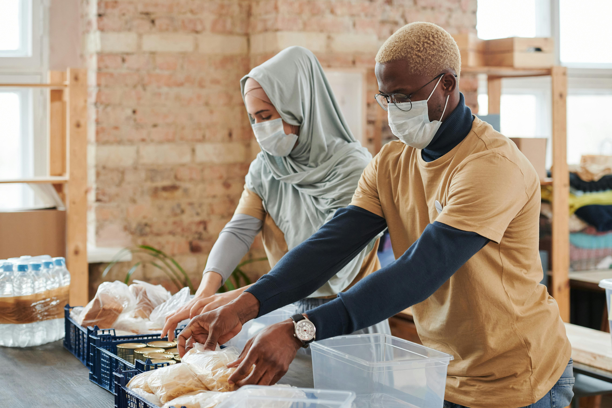
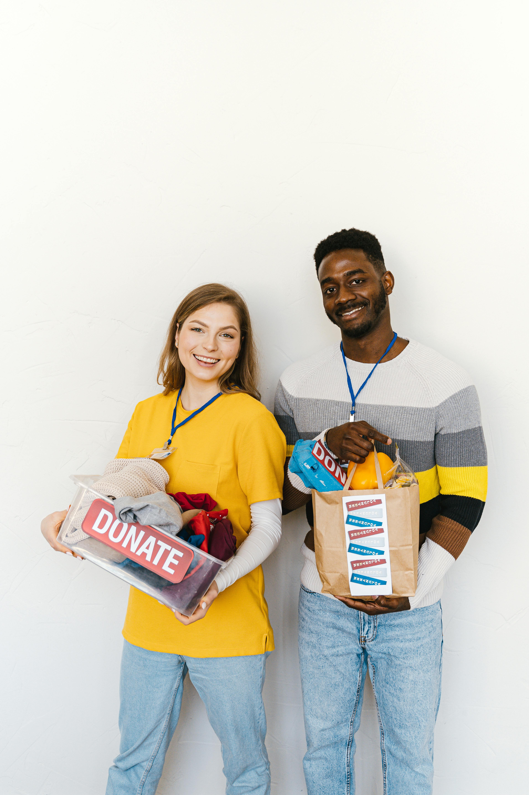
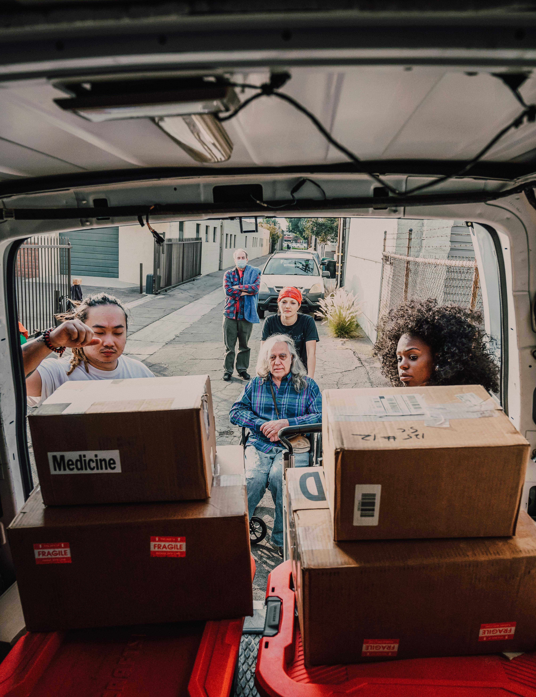
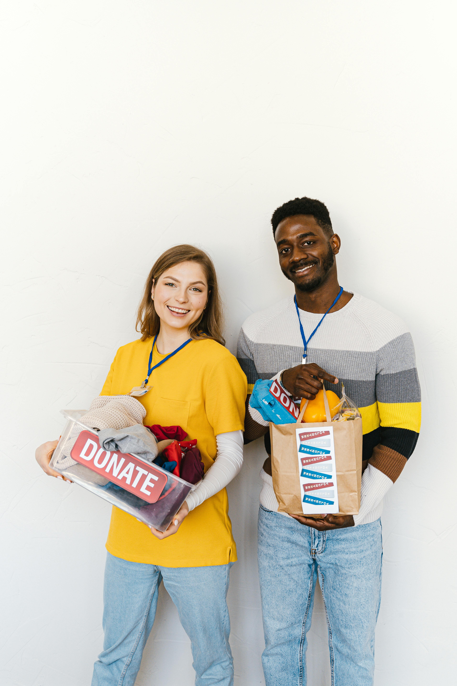
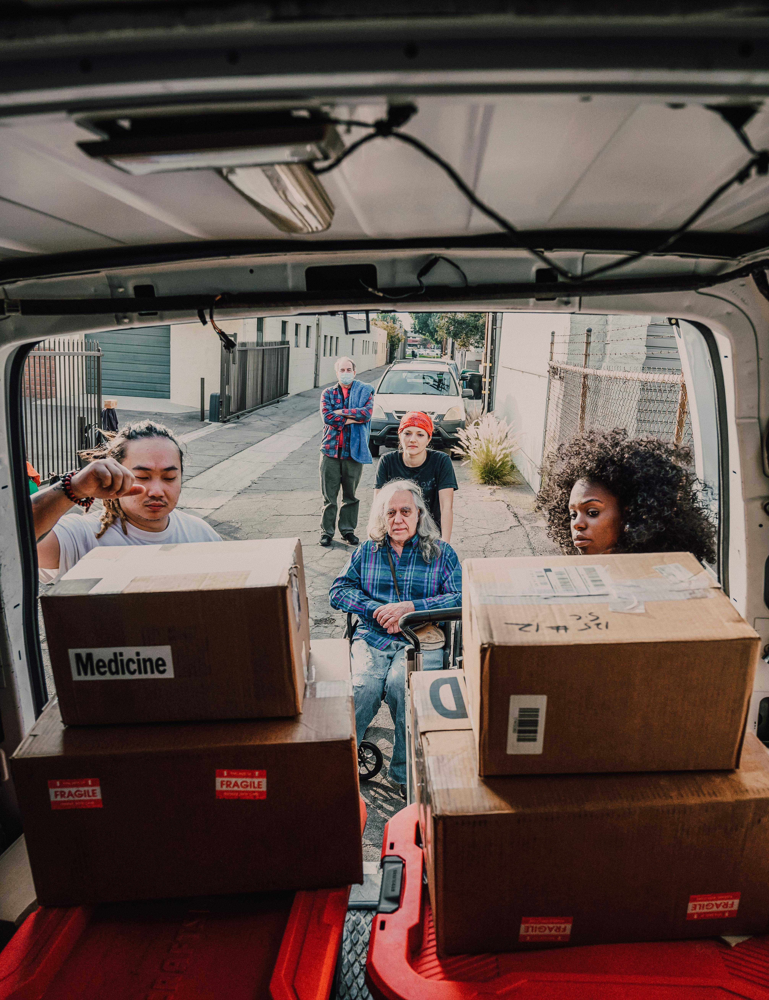
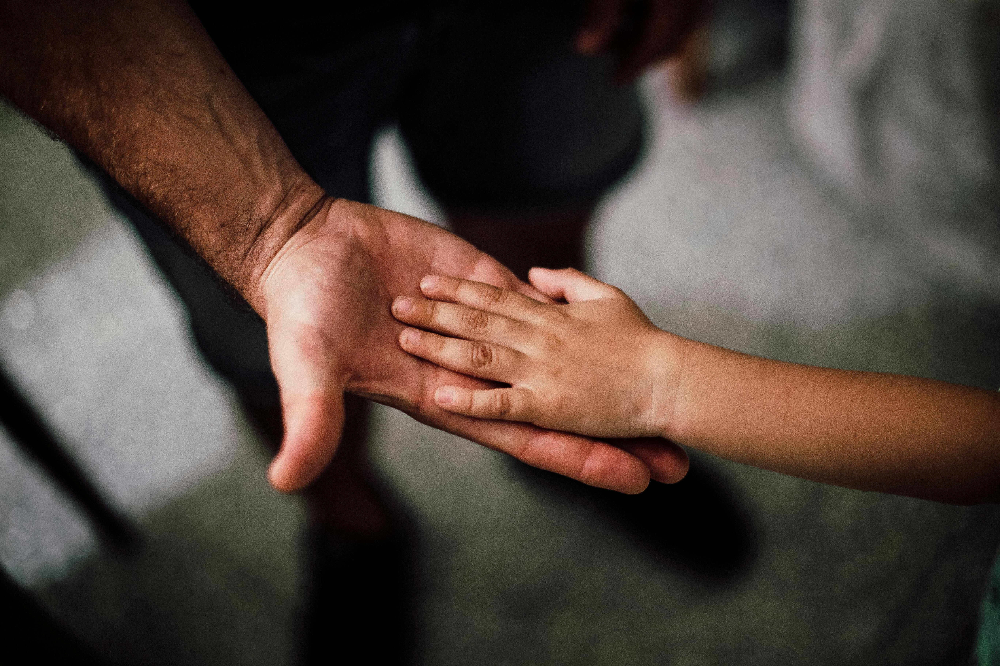
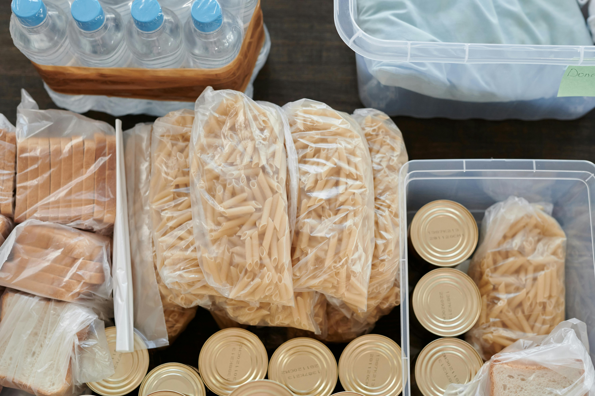

Crianças Sem Fome!
Milhões de crianças brasileiras passam fome todo ano. Ajude-nos a alimentá-las.
Nossa Missão

Nossa missão é garantir que nenhuma criança vá para a cama com fome. Acreditamos que a alimentação adequada é um direito fundamental e essencial para o desenvolvimento físico e mental das crianças. Por isso, trabalhamos incansavelmente para distribuir alimentos de qualidade e promover a segurança alimentar em comunidades carentes.
Como Atuamos
Arrecadação de Alimentos
Organizamos campanhas de arrecadação de alimentos em parceria com supermercados, empresas e doadores individuais. Cada contribuição, por menor que seja, faz uma grande diferença na vida de uma criança.
Distribuição de Refeições
Com a ajuda de voluntários dedicados, preparamos e distribuímos refeições nutritivas diretamente nas comunidades. Nosso foco é garantir que as crianças recebam alimentos balanceados que atendam às suas necessidades nutricionais.
Educação Nutricional
Além de fornecer alimentos, promovemos workshops e palestras sobre nutrição e higiene alimentar para as famílias. Acreditamos que a educação é uma ferramenta poderosa para combater a fome a longo prazo.
Parcerias Locais
Trabalhamos em colaboração com escolas, centros comunitários e outras ONGs para identificar as famílias mais necessitadas e garantir que a ajuda chegue a quem realmente precisa.
Impacto

Desde o início do projeto, já conseguimos alimentar milhares de crianças, proporcionando não apenas refeições, mas também esperança e dignidade. Cada sorriso e cada agradecimento que recebemos nos motiva a continuar e expandir nossas ações.
Como Você Pode Ajudar

 



Você pode fazer parte dessa transformação! Seja como voluntário, doador ou parceiro, sua contribuição é fundamental para o sucesso do nosso projeto. Juntos, podemos construir um Brasil onde todas as crianças tenham acesso a uma alimentação saudável e a um futuro melhor.
Histórias de Impacto
Maria, mãe de três crianças
“Antes de receber a ajuda do projeto, muitas vezes não sabíamos se teríamos comida suficiente para o dia. Agora, minhas crianças podem ir para a escola com a barriga cheia e eu tenho esperança de um futuro melhor para elas.”
João, 10 anos
“Eu gosto muito da comida que recebemos. Agora, posso brincar e estudar sem sentir fome. Obrigado a todos que ajudam!”
Ana, voluntária
“Participar deste projeto me mostrou o quanto podemos fazer a diferença na vida das pessoas. Cada refeição que entregamos é um passo para um Brasil melhor.”
Como Você Pode Contribuir
Além dos depoimentos, você pode incluir uma chamada para ação, incentivando visitantes a se envolverem com o projeto, seja como voluntários, doadores ou parceiros. criancassemfome.com